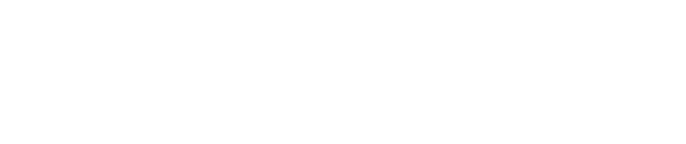
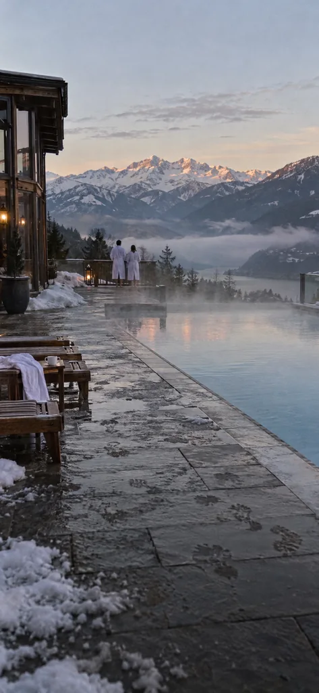
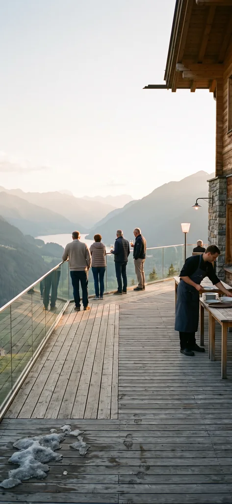
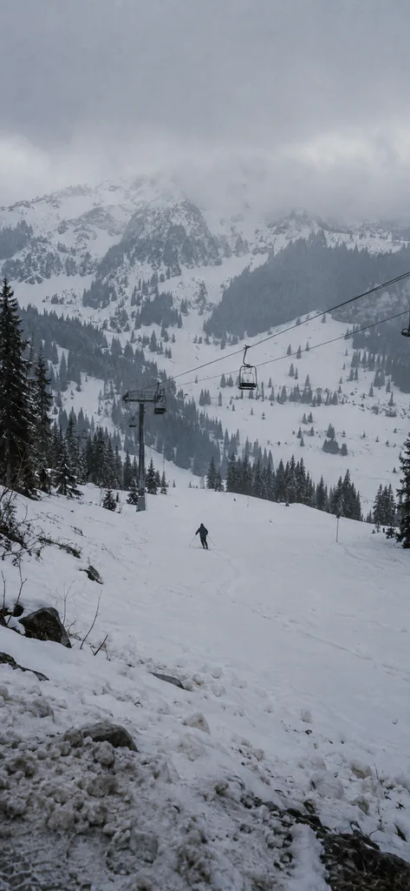
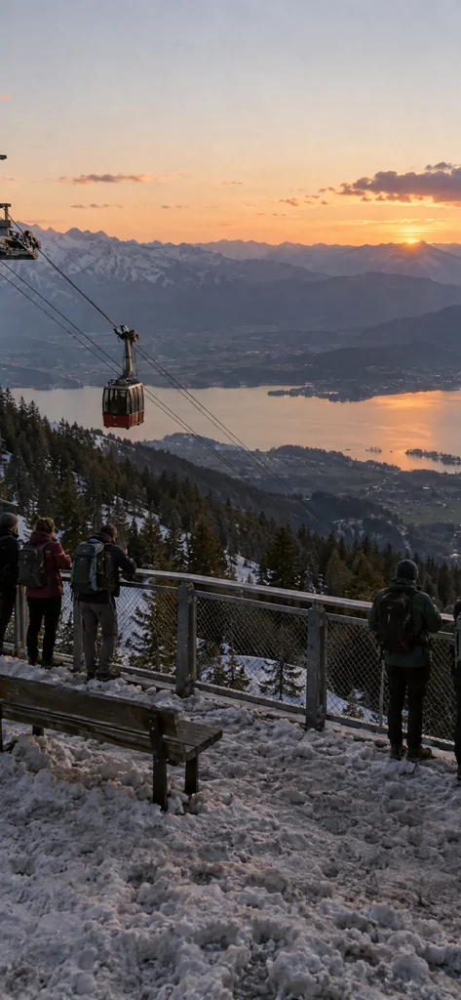

Bühne. Reels · Carousels · Stories
Zeigt, wie sich ein Aufenthalt bei Ihnen anfühlt.

Wir sind eine Full-Service-Medienagentur mit Zuhause in den traditionellen Medien und arbeiten auf dem neuesten Stand mit KI und modernen Tools. Gegründet von Regisseur Nicolas Lekai und Tourismusmanager Daniel Lenzenhuber.
Drei Bereiche
Kanäle
Wir planen, drehen, schneiden und posten. Alles aus einer Hand.
Bühne. Reels · Carousels · Stories
Zeigt, wie sich ein Aufenthalt bei Ihnen anfühlt.
Entscheidung. Shorts · Filme
Shorts für den ersten Eindruck, längere Filme über Zimmer, Spa und Umgebung.
Nähe. Beiträge · Veranstaltungen
Neuigkeiten und Angebote für Stammgäste und die Region.
Welche Kanäle passen, entscheiden wir gemeinsam.
So arbeiten wir
Wir lernen Ihr Haus und Ihre Gäste kennen und machen erste Aufnahmen.
Zweimal im Jahr drehen wir Material für viele Reels und Posts.
Schöne Momente aus dem Alltag schickt Ihr Team vom Handy.
Wir bearbeiten und planen nach Trend und Saison. Jeder Beitrag wird vorher geprüft.
Wir veröffentlichen und zeigen Ihnen, was bei den Buchungen ankommt.
Das richtige Werkzeug
Alles, was Ihre Gäste sehen, entsteht bei Ihnen vor Ort, mit Kamera und echten Menschen. KI nutzen wir dort, wo sie Arbeit spart. So bleibt mehr Zeit für gute Bilder.
Von Hand
Mit KI
Das Beste aus beiden Welten: das richtige Werkzeug für die richtige Arbeit.
So kann es aussehen
Beispiele, noch ohne Kundenzahlen. Stil und Kampagne stimmen wir mit Ihnen ab.

Morgen am Pool Atmosphäre, die man speichert

Abend auf der Terrasse Ankommen, anstoßen, Aussicht

Erste Spur Ein Hang, den man sich merkt

Letzte Gondel Sonnenuntergang über dem See
Sprechen wir
Schreiben Sie uns kurz zu Ihrem Hotel, Ihrer Bergbahn oder Ihrer Therme. Wir melden uns innerhalb von drei Werktagen mit Ideen.